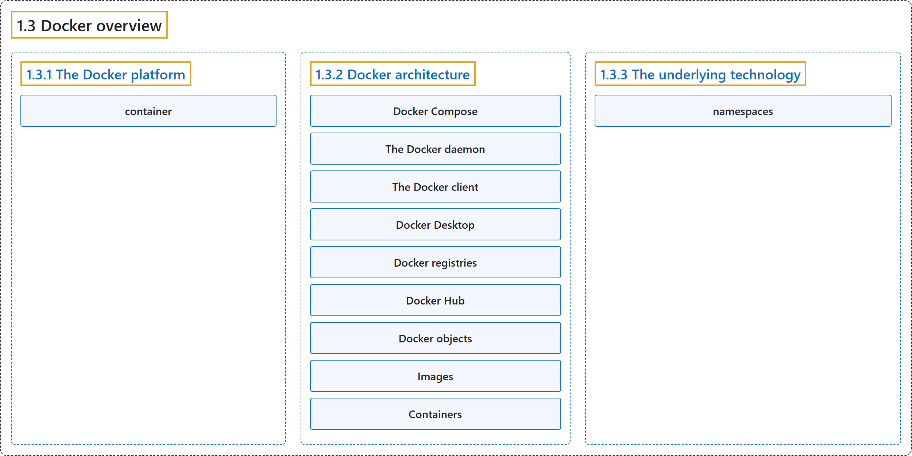

1.3 Docker overview
Classification

Glossary
| Term | Definition | 中文翻译 | Source |
|---|---|---|---|
| 1.3 Docker overview Docker 概述 |
(context) "Docker enables you to separate your applications from your infrastructure so you can deliver software quickly." | （语境）Docker 让你能够把应用程序与基础设施分离，从而快速交付软件。 | Docker Inc., n.d., "What is Docker?", para. 1 |
| 1.3.1 The Docker platform Docker 平台 |
"Docker provides the ability to package and run an application in a loosely isolated environment called a container." | Docker 提供打包和运行应用程序的能力，在一个称为容器的松散隔离环境中。 | Docker Inc., n.d., "The Docker platform", para. 1 |
| container 容器 |
"Docker provides the ability to package and run an application in a loosely isolated environment called a container." | Docker 提供在一个松散隔离环境（称为容器）中打包和运行应用程序的能力。 | Docker Inc., n.d., "The Docker platform", para. 1 |
| 1.3.2 Docker architecture Docker 架构 |
"Docker uses a client-server architecture." | Docker 采用客户端-服务器架构。 | Docker Inc., n.d., "Docker architecture", para. 1 |
| Docker Compose Docker Compose |
"Another Docker client is Docker Compose, that lets you work with applications consisting of a set of containers." | 另一个 Docker 客户端是 Docker Compose，它让你处理由一组容器组成的应用程序。 | Docker Inc., n.d., "Docker architecture", para. 1 |
| The Docker daemon Docker 守护进程 |
"The Docker daemon (dockerd) listens for Docker API requests and manages Docker objects such as images, containers, networks, and volumes." |
Docker 守护进程（dockerd）监听 Docker API 请求，并管理 Docker 对象，例如镜像、容器、网络和卷。 |
Docker Inc., n.d., "The Docker daemon", para. 1 |
| The Docker client Docker 客户端 |
"The Docker client (docker) is the primary way that many Docker users interact with Docker." |
Docker 客户端（docker）是主要方式，许多 Docker 用户借此与 Docker 交互。 |
Docker Inc., n.d., "The Docker client", para. 1 |
| Docker Desktop Docker Desktop |
"Docker Desktop is an easy-to-install application for your Mac, Windows, or Linux environment that enables you to build and share containerized applications and microservices." | Docker Desktop 是一个易于安装的应用程序，适用于你的 Mac、Windows 或 Linux 环境，让你能够构建和共享容器化应用程序与微服务。 | Docker Inc., n.d., "Docker Desktop", para. 1 |
| Docker registries Docker 注册表 |
"A Docker registry stores Docker images." | Docker 注册表存储 Docker 镜像。 | Docker Inc., n.d., "Docker registries", para. 1 |
| Docker Hub Docker Hub |
"Docker Hub is a public registry that anyone can use, and Docker looks for images on Docker Hub by default." | Docker Hub 是一个任何人都可以使用的公共注册表，Docker 默认在 Docker Hub 上查找镜像。 | Docker Inc., n.d., "Docker registries", para. 1 |
| Docker objects Docker 对象 |
"When you use Docker, you are creating and using images, containers, networks, volumes, plugins, and other objects." | 当你使用 Docker 时，你在创建和使用镜像、容器、网络、卷、插件以及其他对象。 | Docker Inc., n.d., "Docker objects", para. 1 |
| Images 镜像 |
"An image is a read-only template with instructions for creating a Docker container." | 镜像是一个只读模板，包含用于创建 Docker 容器的指令。 | Docker Inc., n.d., "Images", para. 1 |
| Containers 容器 |
"A container is a runnable instance of an image." | 容器是一个可运行实例，基于一个镜像。 | Docker Inc., n.d., "Containers", para. 1 |
| 1.3.3 The underlying technology 底层技术 |
"Docker is written in the Go programming language and takes advantage of several features of the Linux kernel to deliver its functionality." | Docker 用 Go 编程语言编写，利用 Linux 内核的若干特性来实现其功能。 | Docker Inc., n.d., "The underlying technology", para. 1 |
| namespaces 命名空间 |
"Docker uses a technology called namespaces to provide the isolated workspace called the container." |
Docker 使用一种称为 namespaces（命名空间）的技术来提供称为容器的隔离工作空间。 |
Docker Inc., n.d., "The underlying technology", para. 1 |
References
Docker Inc. (n.d.). What is Docker? Docker Docs. Retrieved October 31, 2026, from https://docs.docker.com/get-started/docker-overview/